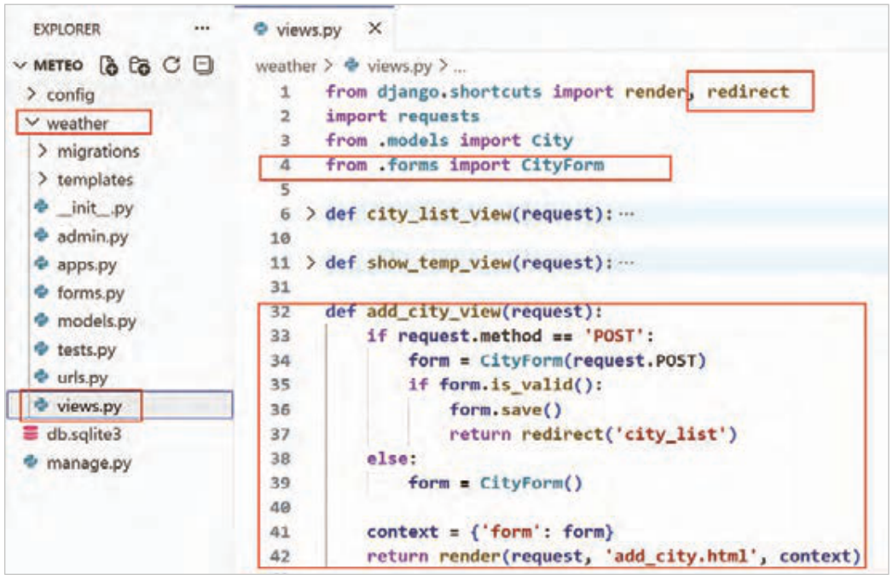
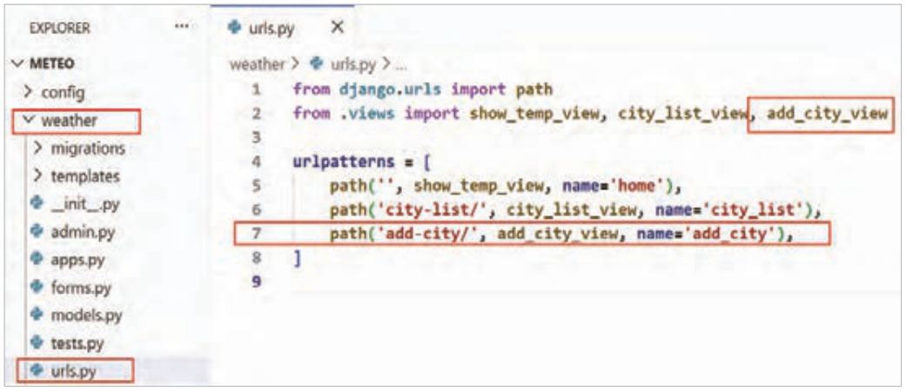
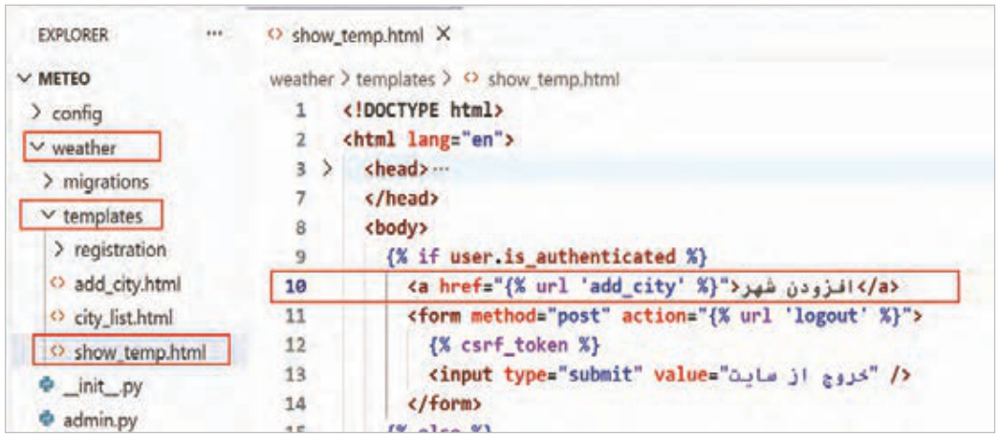
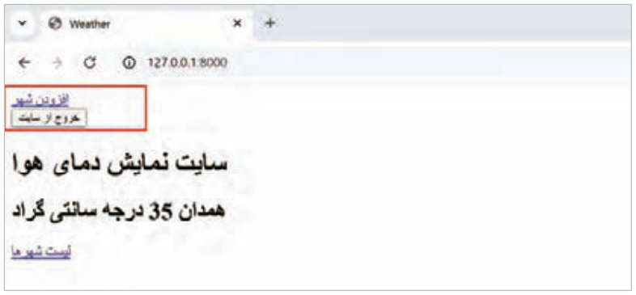
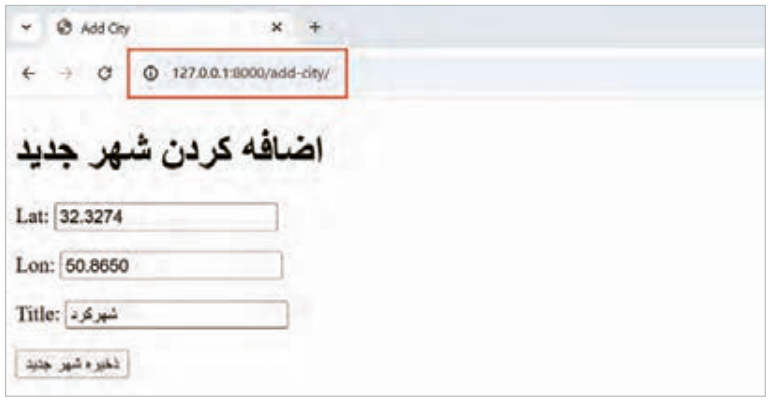
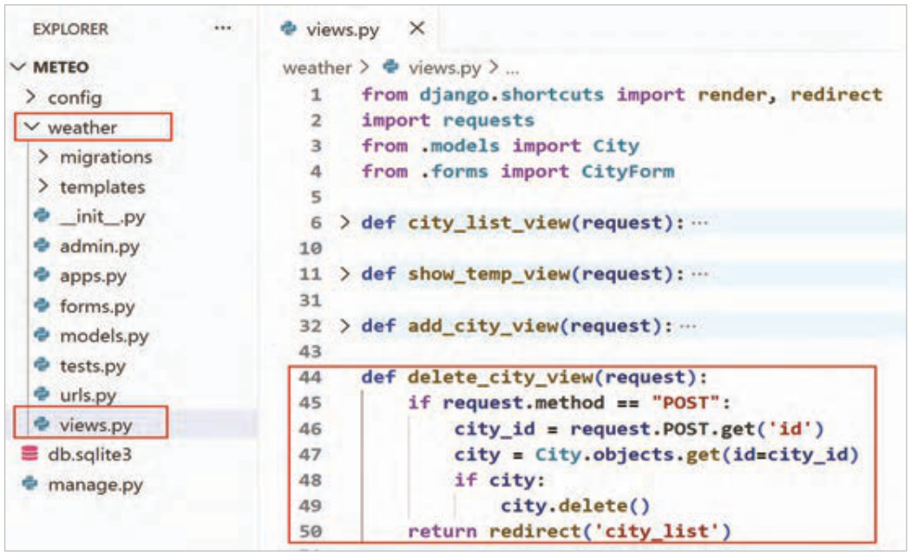
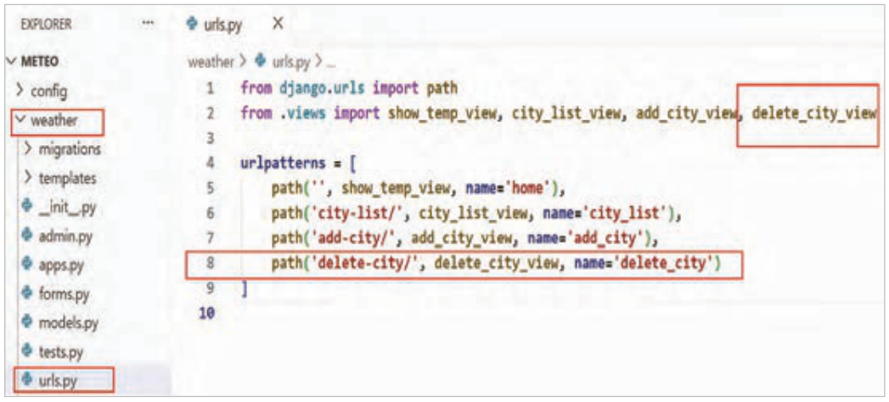
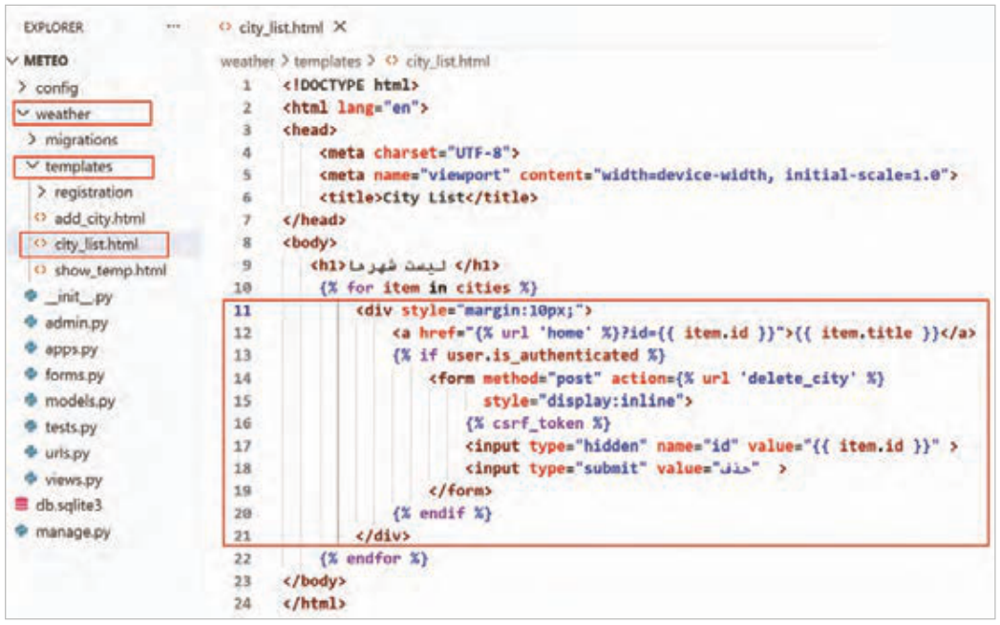
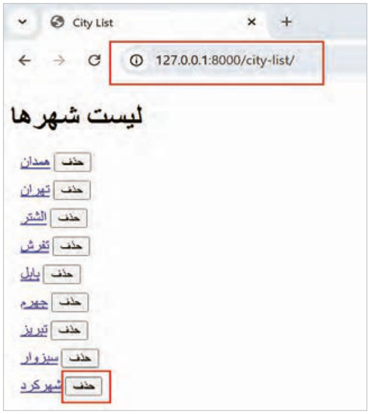
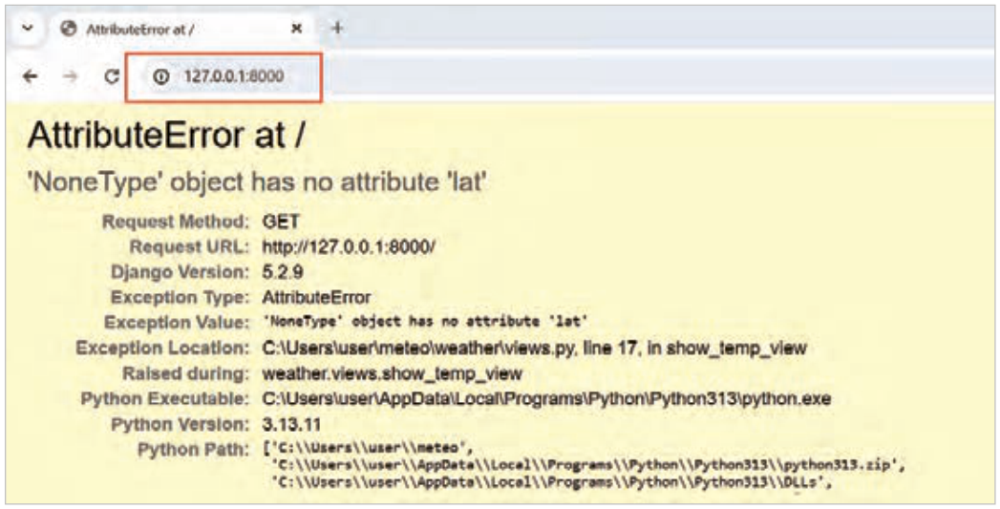

مرحله سوم: در فایل views.py تابع add_city_view را همانند شکل 66 اضافه کنید.

شکل ۶۶: ایجاد view جهت افزودن شهر
توضیحات کدها:
خط 1: متد redirect درون این فایل import شده است.
خط 4: کلاس CityForm از فایل forms.py درون این فایل import شده است.
خط 33: اگر کاربر در صفحه «اضافهکردن شهر»، اطلاعات فرم را وارد کرده و دکمه «ذخیره شهر جدید» را کلیک کند، یک request از نوع post برای add_city_view ارسال میشود، در این خط نوع request با if بررسی شده است.
خط 34: یک فرم از CityForm براساس نوع درخواست ارسالشدۀ کاربر ایجاد و در متغیر form ذخیره شده است تا به کمک آن اطلاعاتی که کاربر بهوسیله آن فرم ارسال کرده است، ذخیره شود.
خط 35: تابع is_valid فیلدهای وارد شده کاربر را بررسی میکند. در request ارسال کاربر، باید فیلدهای اجباری مقدار گرفته باشند و همچنین نوع فیلدها صحیح باشد.
خط 36: در صورت معتبر بودن درخواست، اطلاعات در جدول city ذخیره خواهد شد.
خط 37: پس از ذخیره موفق اطلاعات شهر، کاربر به صفحه لیست شهرها منتقل خواهد شد.
خط 39: وقتی کاربر آدرس این صفحه را در مرورگر وارد میکند، یک درخواست از نوع GET اتفاق افتاده است، در این حالت، نوع request چیزی غیر از POST است، پس یک فرم جدید از CityForm ایجاد و در متغیر form ذخیره شده است تا فرم افزودن شهر به کاربر نمایش داده شود.
صفحه ۳۲۱
خط 41: فرم ساخته شده، در دیکشنری context قرار گرفته و در خط بعد به add_city.html ارسال شده است.
مرحله چهارم: در فایل urls.py مربوط به weather app یک path جدید همانند شکل 67 اضافه کنید.

شکل ۶۷: اضافهکردن path جدید برای افزودن شهر
توضیحات کدها:
یک path جدید جهت افزودن شهر اضافه شده است.
مرحله پنجم: در فایل show_temp.html یک لینک برای افزودن شهر، در خط 10 همانند شکل 68 اضافه کنید.

شکل ۶۸: ایجاد لینک به صفحه افزودن شهر
صفحه ۳۲۲
اکنون همه فایلها را ذخیره و صفحه اصلی سایت را refresh کنید.
با دکمه [ورود به سایت] login کنید. لینک افزودن شهر برای شما نمایش داده خواهد شد (شکل 69).

شکل ۶۹: نمایش لینک پس از login کاربر
بر روی لینک «افزودن شهر» کلیک کنید، سپس همانند شکل 70، اطلاعات شهر موردنظر خود را وارد و دکمه ذخیره شهر جدید را کلیک کنید. در صورت ذخیره موفق اِین فرم، کاربر به صفحه لیست شهرها منتقل و شهر اضافه شده به انتهای لیست افزوده خواهد شد.

شکل ۷۰: فرم اضافهکردن شهر جدید
حذف شهر با کاربر عضو سایت
در این پروژه میتوانید امکان حذف شهرها را به کاربر عضو سایت بدهید، این کار را در سه مرحله میتوانید انجام دهید.
صفحه ۳۲۳
مرحله اول: یک view جدید با نام delete_city_view در views.py همانند شکل 71 ایجاد کنید.

شکل ۷۱: ساخت view جهت حذف شهرها
توضیحات کدها:
خط 49: دستور delete از ORM جنگو استفاده میکند و شهر انتخاب شده را از پایگاهداده حذف میکند.
خط 50: بعد از حذفکردن شهر، کاربر را به لیست شهرها منتقل میکند.
مرحله دوم: یک path جدید برای delete_city_view در urls.py همانند شکل 72 اضافه کنید.

شکل ۷۲: افزودن path جدید برای حذف شهرها
صفحه ۳۲۴
مرحله سوم: فایل city_list.html را همانند شکل 73 تغییر دهید.

شکل ۷۳: اضافهکردن دکمه حذف به city_list.html

شکل ۷۴: دکمه حذف در لیست شهرها
توضیحات کدها:
خط 13: این دستور باعث میشود دکمه حذف شهر فقط برای کاربر login شده نمایش داده شود.
خط 14: یک فرم با متد از نوع POST ایجاد شده است. در action این فرم، به delete_city اشاره شده است، یعنی درخواست حذف به view حذف شهر ارسال خواهد شد.
خط 17: آیدی شهر بهصورت یک فیلد مخفی (hidden) اضافه شده است. آیدی شهر در خروجی نمایش داده نخواهد شد. فایلها را ذخیره کنید، صفحه لیست شهرها را باز کنید. خروجی همانند شکل 74 خواهد بود.
صفحه ۳۲۵
با کلیک روی لینک حذف مقابل هر شهر، شهر موردنظر حذف شده و لیست شهرها بهروزرسانی میشود. درصورتیکه کاربر مهمان باشد، لینک حذف را مشاهده نخواهد کرد.
بهینهسازی و امن کردن پروژه
در این مرحله، برای بهینهسازی پروژه، ایرادها و باگهای امنیتی پروژه بررسی میشوند.
باگ کدنویسی شماره یک:
اگر هیچ شهری در جدول City وجود نداشته باشد یا همه شهرها حذف شده باشند، در صفحه اصلی سایت خطایی همانند شکل 75 مشاهده خواهد شد.

شکل ۷۵: خطا در صورت خالی بودن جدول شهرها
Page 320
مرحله سوم: در فایل views.py تابع add_city_view را همانند شکل 66 اضافه کنید.
Figure 66: ایجاد view جهت افزودن شهر
توضیحات کدها:
خط 1: متد redirect درون این فایل import شده است.
خط 4: کلاس CityForm از فایل forms.py درون این فایل import شده است.
خط 33: اگر کاربر در صفحه «اضافهکردن شهر»، اطلاعات فرم را وارد کرده و دکمه «ذخیره شهر جدید» را کلیک کند، یک request از نوع post برای add_city_view ارسال میشود، در این خط نوع request با if بررسی شده است.
خط 34: یک فرم از CityForm براساس نوع درخواست ارسالشدۀ کاربر ایجاد و در متغیر form ذخیره شده است تا به کمک آن اطلاعاتی که کاربر بهوسیله آن فرم ارسال کرده است، ذخیره شود.
خط 35: تابع is_valid فیلدهای وارد شده کاربر را بررسی میکند. در request ارسال کاربر، باید فیلدهای اجباری مقدار گرفته باشند و همچنین نوع فیلدها صحیح باشد.
خط 36: در صورت معتبر بودن درخواست، اطلاعات در جدول city ذخیره خواهد شد.
خط 37: پس از ذخیره موفق اطلاعات شهر، کاربر به صفحه لیست شهرها منتقل خواهد شد.
خط 39: وقتی کاربر آدرس این صفحه را در مرورگر وارد میکند، یک درخواست از نوع GET اتفاق افتاده است، در این حالت، نوع request چیزی غیر از POST است، پس یک فرم جدید از CityForm ایجاد و در متغیر form ذخیره شده است تا فرم افزودن شهر به کاربر نمایش داده شود.
Page 321
خط 41: فرم ساخته شده، در دیکشنری context قرار گرفته و در خط بعد به add_city.html ارسال شده است.
مرحله چهارم: در فایل urls.py مربوط به weather app یک path جدید همانند شکل 67 اضافه کنید.
Figure 67: اضافهکردن path جدید برای افزودن شهر
توضیحات کدها:
یک path جدید جهت افزودن شهر اضافه شده است.
مرحله پنجم: در فایل show_temp.html یک لینک برای افزودن شهر، در خط 10 همانند شکل 68 اضافه کنید.
Figure 68: ایجاد لینک به صفحه افزودن شهر
Page 322
اکنون همه فایلها را ذخیره و صفحه اصلی سایت را refresh کنید.
با دکمه [ورود به سایت] login کنید. لینک افزودن شهر برای شما نمایش داده خواهد شد (شکل 69).
Figure 69: نمایش لینک پس از login کاربر
بر روی لینک «افزودن شهر» کلیک کنید، سپس همانند شکل 70، اطلاعات شهر موردنظر خود را وارد و دکمه ذخیره شهر جدید را کلیک کنید. در صورت ذخیره موفق اِین فرم، کاربر به صفحه لیست شهرها منتقل و شهر اضافه شده به انتهای لیست افزوده خواهد شد.
Figure 70: فرم اضافهکردن شهر جدید
حذف شهر با کاربر عضو سایت
در این پروژه میتوانید امکان حذف شهرها را به کاربر عضو سایت بدهید، این کار را در سه مرحله میتوانید انجام دهید.
Page 323
مرحله اول: یک view جدید با نام delete_city_view در views.py همانند شکل 71 ایجاد کنید.
Figure 71: ساخت view جهت حذف شهرها
توضیحات کدها:
خط 49: دستور delete از ORM جنگو استفاده میکند و شهر انتخاب شده را از پایگاهداده حذف میکند.
خط 50: بعد از حذفکردن شهر، کاربر را به لیست شهرها منتقل میکند.
مرحله دوم: یک path جدید برای delete_city_view در urls.py همانند شکل 72 اضافه کنید.
Figure 72: افزودن path جدید برای حذف شهرها
Page 324
مرحله سوم: فایل city_list.html را همانند شکل 73 تغییر دهید.
Figure 73: اضافهکردن دکمه حذف به city_list.html
Figure 74: دکمه حذف در لیست شهرها
توضیحات کدها:
خط 13: این دستور باعث میشود دکمه حذف شهر فقط برای کاربر login شده نمایش داده شود.
خط 14: یک فرم با متد از نوع POST ایجاد شده است. در action این فرم، به delete_city اشاره شده است، یعنی درخواست حذف به view حذف شهر ارسال خواهد شد.
خط 17: آیدی شهر بهصورت یک فیلد مخفی (hidden) اضافه شده است. آیدی شهر در خروجی نمایش داده نخواهد شد. فایلها را ذخیره کنید، صفحه لیست شهرها را باز کنید. خروجی همانند شکل 74 خواهد بود.
Page 325
با کلیک روی لینک حذف مقابل هر شهر، شهر موردنظر حذف شده و لیست شهرها بهروزرسانی میشود. درصورتیکه کاربر مهمان باشد، لینک حذف را مشاهده نخواهد کرد.
بهینهسازی و امن کردن پروژه
در این مرحله، برای بهینهسازی پروژه، ایرادها و باگهای امنیتی پروژه بررسی میشوند.
باگ کدنویسی شماره یک:
اگر هیچ شهری در جدول City وجود نداشته باشد یا همه شهرها حذف شده باشند، در صفحه اصلی سایت خطایی همانند شکل 75 مشاهده خواهد شد.